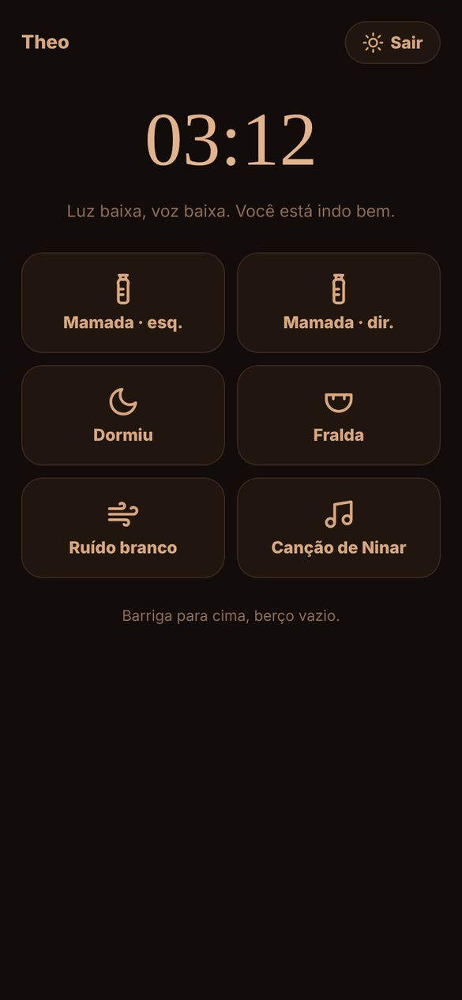
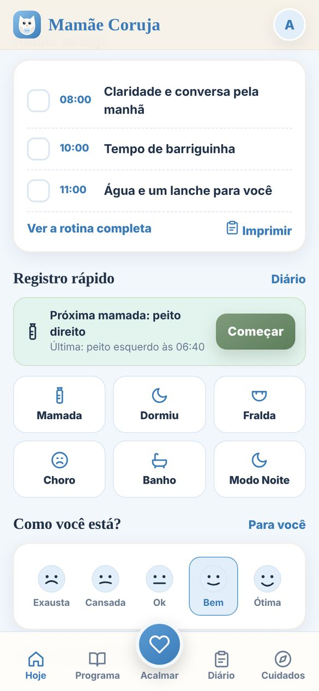
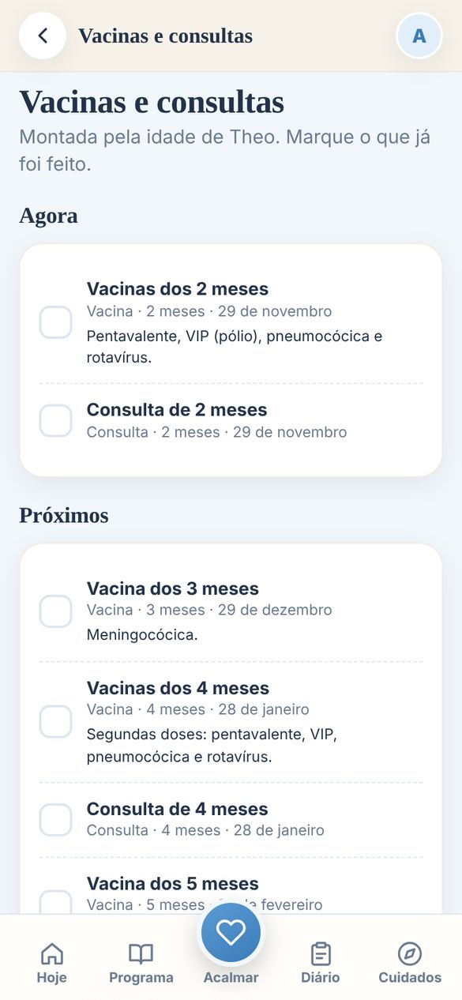
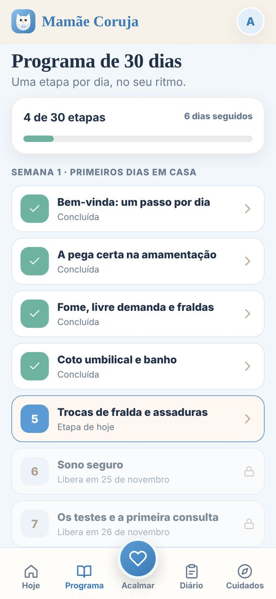
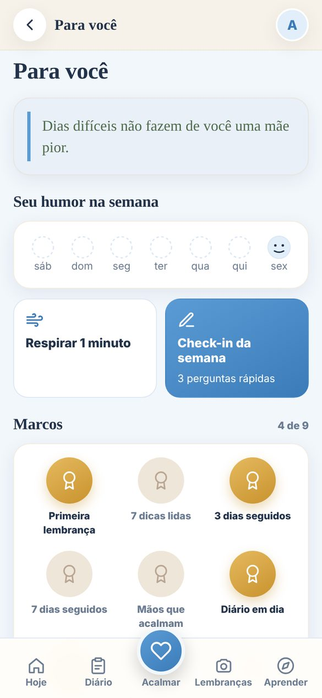
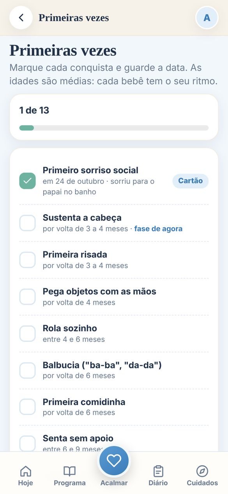

O plano do primeiro ano do seu bebê está pronto.
Com base nas suas respostas, separamos o que fazer agora, o que vem pela frente e o que vai deixar os seus dias mais leves.
Este plano foi feito para isso.

As 3 prioridades para você agora.
Escolhidas a partir do que você contou. Cada uma já está pronta dentro do app.

Entender o choro
O SOS do choro vai passo a passo: fome, fralda, gases, sono, acolhimento. Com o shhh a um toque e os sinais de quando procurar atendimento.

Noites mais tranquilas
Rotina de sono pela idade, ritual da noite e o Modo Noite: tela escura e botões grandes para registrar sem acender a luz.

Mamadas sem confusão
Um toque começa o cronômetro e o app lembra qual peito oferecer na próxima mamada. Nada de anotar em papel.

Alívio para a cólica
5 massagens guiadas com cronômetro, incluindo a da cólica, e sons que acalmam: shhh, ruído branco e som do útero.

Nenhuma vacina esquecida
As 17 vacinas e consultas do primeiro ano, montadas pela data de nascimento, com aviso antes de cada uma.

Saber o que fazer hoje
Todo dia, o passo certo para a idade: uma leitura curta, tarefas simples e a rotina do dia. Sem achismo.

Um espaço só seu
O app pergunta como você está, sugere pausas, tem respiração guiada de 1 minuto e etapas sobre o pós-parto.
Uma carta para você
Ainda não sabe escrever. Mas, se soubesse, diria:
Ninguém vai lembrar das noites difíceis. Mas você vai lembrar de como viveu este ano.
Mês a mês, você sabe o que vem pela frente.
Cada mês é liberado pela idade do seu bebê, com o que esperar, sono, saúde e como estimular.
Imagine o primeiro aniversário do seu bebê.
Você abre o app e está tudo lá: o primeiro sorriso, a primeira risada, o peso de cada consulta, o cartão de cada mesversário.
E você viveu esse ano do jeito que disse que queria:

Daqui a 30 dias, você pode estar em um destes dois lugares.
Tudo continua igual
- Pesquisando no Google às 3h da manhã
- Ouvindo dez opiniões diferentes e confiando em nenhuma
- Anotando mamadas em papel e esquecendo datas de vacina
- Terminando o dia achando que errou
Um passo de cada vez
- Abrindo o SOS e sabendo o próximo passo
- Seguindo o passo do dia, na idade exata do seu bebê
- Recebendo aviso antes de cada vacina e consulta
- Terminando o dia sabendo que fez o melhor
Está tudo dentro do app. Pode contar.
Conteúdo organizado a partir das orientações do Ministério da Saúde (Caderneta da Criança e Calendário Nacional de Vacinação) e da Sociedade Brasileira de Pediatria.
O plano do seu bebê vem dentro de um app completo.
Se cada parte do Mamãe Coruja fosse vendida separada, como um curso ou um guia, seria assim:
Programa Primeiros 30 Dias
30 etapas curtas em 4 semanas: da chegada em casa à rotina montada. Uma por dia, no seu ritmo.
Mês a mês do primeiro ano
12 meses liberados pela idade do bebê: o que esperar, sono, saúde e como estimular em cada fase.
SOS da madrugada + Modo Noite
9 situações com passo a passo (choro, febre, engasgo, cólica…), sinais de alerta e tela escura para as 3h da manhã.
Agenda de vacinas e consultas
17 vacinas e consultas do calendário oficial, com aviso antes de cada uma e o que levar.
Diário inteligente
Mamadas (com o próximo peito), sono, fraldas e choro em 1 toque. Resumo pronto para mostrar ao pediatra.
Acalmar: sons e massagens
9 sons para dormir (shhh, ruído branco, útero, canções) e 5 massagens guiadas, uma delas para cólica.
18 guias de cuidados
Banho, coto umbilical, pega, arrotar, cólica, sono seguro, febre e mais, em linguagem simples.
Espaço para você
Humor do dia, respiração guiada de 1 minuto, check-in semanal e etapas sobre pós-parto e baby blues.
Primeiras vezes e crescimento
13 conquistas com data e foto, mais a curva de peso e altura de cada consulta.
Módulo Sono de 4 a 12 meses
O próximo passo depois dos primeiros meses: horários, sonecas e noites mais organizadas.
Módulo Primeiros Alimentos
Comida de verdade a partir dos 6 meses, com segurança e sem estresse.
E você ainda teria que juntar tudo sozinha, em PDFs, vídeos e grupos diferentes, às 3h da manhã.
Mas você não vai pagar R$ 767.
Nem R$ 297. Nem R$ 97.
O plano do seu bebê por menos de R$ 1 por dia.
Menos do que um cafezinho, para ter o próximo passo na mão durante o primeiro ano.
A assinatura Mamãe Coruja inclui
- Programa Primeiros 30 Dias
R$ 97 - Mês a mês do primeiro ano
R$ 147 - SOS da madrugada + Modo Noite
R$ 67 - Agenda de vacinas e consultas
R$ 37 - Diário inteligente
R$ 47 - Acalmar: sons e massagens
R$ 37 - 18 guias de cuidados
R$ 67 - Espaço para você
R$ 47 - Primeiras vezes e crescimento
R$ 27 - Módulo Sono de 4 a 12 meses bônus
R$ 97 - Módulo Primeiros Alimentos bônus
R$ 97
Total: R$ 767
Escolha o plano do seu bebê:todos com tudo incluso e 30 dias de garantia
Mensal
cobrado todo mês · R$ 0,89 por dia
sem desconto- Tudo do app, sem limite
- Os 2 módulos bônus inclusos
- Cancele quando quiser
Anual
−39%de R$ 324 por
sai por R$ 16,42 por mês · R$ 0,54 por dia
💰 Economize R$ 127- Tudo do mensal
- O primeiro ano inteiro do seu bebê, até o 1º aniversário
- Um pagamento só, sem cobrança todo mês
- Nenhum mês do primeiro ano sem o app
Semestral
−28%de R$ 162 por
sai por R$ 19,50 por mês · R$ 0,64 por dia
💰 Economize R$ 45- Tudo do mensal
- Seis meses de acompanhamento
- Renova a cada 6 meses
💛 30 dias de garantia em todos os planos · acesso na hora, no e-mail e no WhatsApp
Pagamento no cartão, renovado ao fim de cada período. Sem fidelidade: cancele quando quiser pelo WhatsApp e use até o fim do período pago.
garantia
Teste por 30 dias. O risco é todo nosso.
Use o Mamãe Coruja na sua rotina por um mês inteiro. Se não sentir que os dias ficaram mais leves, peça o reembolso pelo WhatsApp e devolvemos 100% do que você pagou. Sem perguntas, sem burocracia.
Perguntas frequentes
Preciso baixar na loja de apps?
Não. Você abre pelo link que chega no seu e-mail e instala na tela inicial do celular em poucos segundos. Funciona no iPhone e no Android.
Serve para bebê de quantos meses?
Do nascimento até o primeiro aniversário. Dá para começar ainda grávida, nas últimas semanas: o app se ajusta pela data de nascimento.
Como funciona a assinatura?
Você escolhe o plano: mensal (R$ 27 por mês), semestral (R$ 117 a cada 6 meses) ou anual (R$ 197 por ano). Todos têm tudo incluso e renovam no cartão ao fim do período. Você pode cancelar quando quiser pelo WhatsApp do suporte e continua usando até o fim do período pago.
E se eu não gostar?
Você tem 30 dias de garantia. Se não gostar, pede o reembolso pelo WhatsApp e devolvemos 100% do que você pagou.
O app substitui o pediatra?
Não, e nunca vai prometer isso. Ele organiza a rotina, ajuda você a acompanhar o bebê, deixa as dúvidas anotadas para a consulta e mostra os sinais de quando procurar atendimento.
É um método de deixar o bebê chorar?
Não. Tudo no app parte do acolhimento, da rotina e do sono seguro.
Meus dados ficam salvos?
Sim, no seu próprio celular. E você tem um código de backup para levar tudo para outro aparelho.
E se meu bebê for menina? E se ainda não souber?
Na primeira tela você conta se é menino ou menina, e o app fica azul ou rosa. Se ainda não souber, escolhe depois.
Os primeiros meses passam rápido.
Um dia você vai sentir saudade até das noites longas. Viva esse ano com mais calma, ao lado do seu bebê. O plano já está pronto. Só falta você começar.
Começar o plano do meu bebêa partir de R$ 16,42 por mês · 30 dias de garantia30 dias de garantia · cancele quando quiser